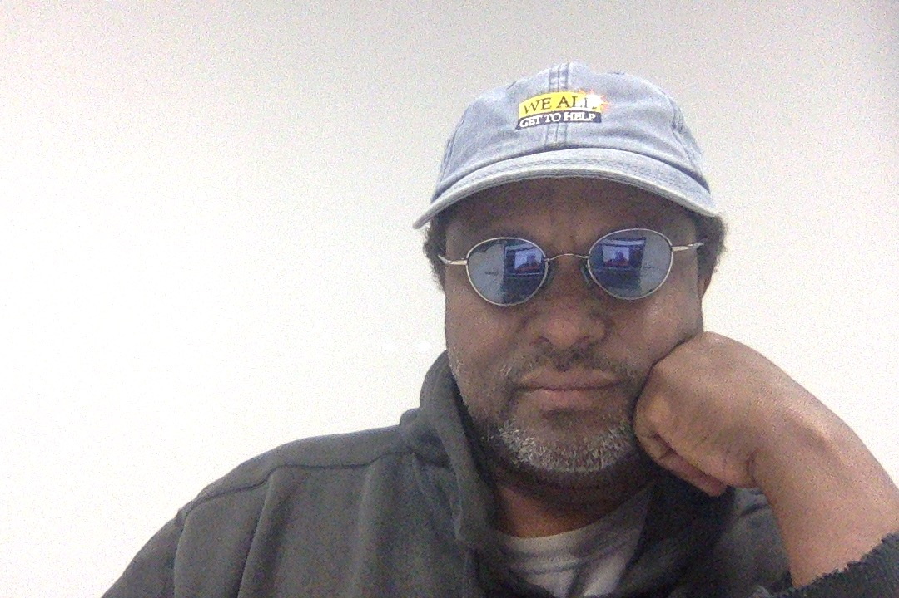

About Me

I have over thirty years of software engineering experience. During this time I have worked on complex system such as IBM’s MVS operating system, Sunquest’s lab system and many IVR applications for large companies handling millions of transactions daily. I truly enjoy solving problems and being part of a team dedicated to making a difference in our world through software applications.
For the last 5 years I have taken some time off and on from programming. During this time I have started three successful restaurants while still dabbling in programming trying to figure out which I like most, business or programing. Though there are some aspects of doing business I like, I really miss software development. I enjoy the challenge that comes with developing software. I also like the solitude and teamwork combination that is often associated with application development.
Currently I am working on becoming a competent full stack developer to supplant my years of experience in the software world. I am a little worried that I may be starting this venture a little too late in my life but I am always up for a challenge - after all that is where all the fun is.